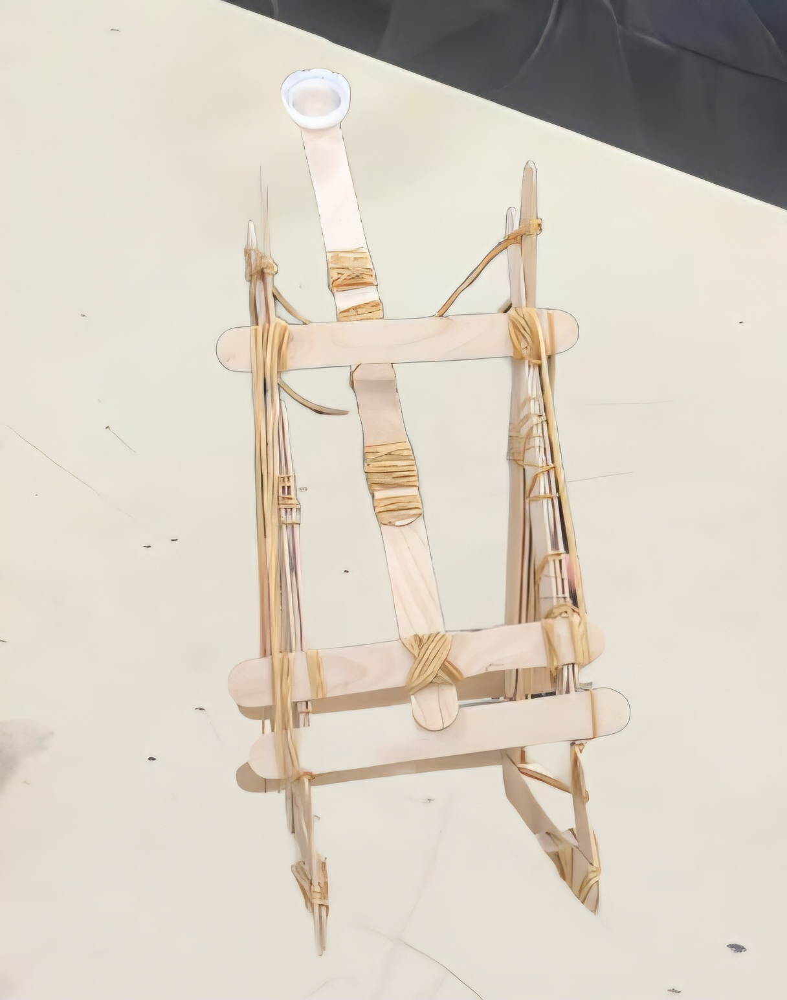

ENTORNO MULTIMEDIA
GALERÍA
DE PROYECTOS
Explora los proyectos destacados
Un ingenioso barco artesanal equipado con una catapulta funcional, diseñado para combinar creatividad y mecánica.
Dos barcos con catapultas y elegantes coronas creadas con impresión 3D, mostrando innovación y diseño.
Un barco único con una catapulta integrada y una vela decorativa que evoca aventuras marítimas.
Una representación creativa del tornillo de Arquímedes, destacando la ingeniería clásica en una manualidad.

Una catapulta hecha a mano con palitos de helado y gomas, perfecta para experimentar con física básica.
Otra impresionante catapulta artesanal construida con palitos de helado y gomas, ideal para aprender jugando.